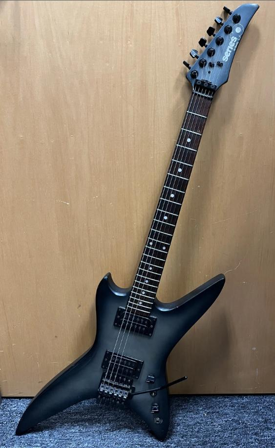

The Song Remains the Same
I wrote this on FB the other day,
but thought I should share it here as well:
It's funny how I used to have a near-photographic memory, but now I barely remember my childhood,
and even my teen years, at all, other than as vague shadows. But sometimes, something comes
alongs and opens the floodgates. Usually music. :) And I was just watching Led Zeppelin's
The Song Remains the Same for the first time since I was 16, and I was suddenly transported
to a house on Clayton Drive in Lancaster. I was friends with two brothers, and their house was
practically a second home for the lot of us who hung out together. We watched that movie so many
times... That, and Headbanger's Ball on MTV, and a bunch of of AC/DC concerts on VHS. Brian
was the first of us to own a guitar... A Bently Series 10, if I remember correctly... I'm 99%
certain one identical to the one on this post... And I "sang" while he played. Of course, being
metal, and having to project my voice over his amp, it was more screaming than singing, but still...
lol... Even when the rest of our friends were off doing other things, I was either working out with
Greg or jamming with Brian.
They were from Cincinnati, and a bit after I moved to Georgia in high school, they moved away from
Lancaster. I believe back to Cincinnati. But after that, I lost contact with those two. Two of the
other guys in the band I jammed with up until the pandemic were part of that group of friends, and
they had lost contact as well. The entire group of us were great friends, but Brian was my best
friend for a couple of years, up until I moved. I've tried to find the two of them online, but I
honestly doubt either ever developed much of an online presence...
 times
times